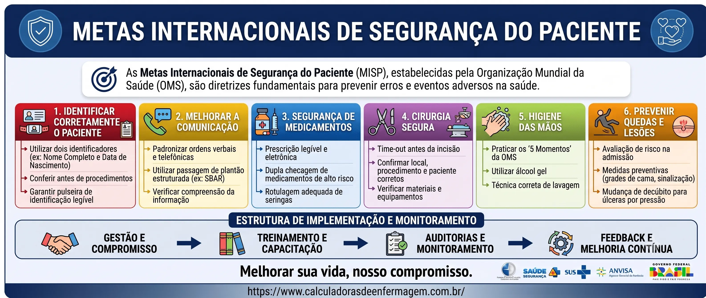

Segurança do Paciente
Metas Internacionais de Segurança do Paciente
Guia completo sobre as 6 metas estabelecidas pela Organização Mundial da Saúde (OMS) e Joint Commission International (JCI) para garantir um cuidado seguro, reduzir riscos e promover a qualidade da assistência em saúde.
As metas internacionais de segurança do paciente são diretrizes estabelecidas para garantir um ambiente seguro e reduzir riscos nos cuidados de saúde. Elas são um esforço conjunto da Organização Mundial da Saúde (OMS) e da Joint Commission International (JCI) (WHO, 2021).
A implementação dessas metas contribui para um ambiente de cuidados mais seguro, reduzindo danos aos pacientes, promovendo a qualidade da assistência e otimizando resultados em saúde. Ao usar nossas escalas e calculadoras você verá por muitas vezes a referência de alguma meta de acordo com a escala ou a calculadora, isso visa reforçar atenção nos cuidados e trabalhar na educação em saúde.

Em 2019, a 72ª Assembleia Mundial da Saúde adotou a resolução WHA72.6 sobre ação global em segurança do paciente, que culminou no Plano de Ação Global para a Segurança do Paciente 2021-2030, aprovado pela 74ª Assembleia Mundial da Saúde em 2021. Este plano tem como visão "um mundo em que ninguém sofra danos nos cuidados de saúde e cada paciente receba cuidados seguros e respeitosos, sempre e em todos os lugares" (WHO, 2021, p. 9).
A Segurança do Paciente e sua Importância na Assistência de Enfermagem
A segurança do paciente representa a redução ao mínimo do risco de dano desnecessário associado ao cuidado de saúde (IBSP, 2024). Ela envolve a prevenção de erros e eventos adversos que podem ocorrer durante todo o processo de cuidado — desde a administração de medicamentos e procedimentos cirúrgicos até a comunicação entre equipes de saúde.
No Brasil, o Programa Nacional de Segurança do Paciente (PNSP), instituído pela Portaria nº 529 de 1º de abril de 2013, define diretrizes para a implementação de ações que assegurem a segurança do paciente em todos os níveis de atenção à saúde (BRASIL, 2013). A RDC nº 36/2013 da ANVISA instituiu o Sistema Nacional de Notificação e Prevenção de Eventos Adversos.
Para a enfermagem, a segurança do paciente é especialmente relevante pois os profissionais estão na linha de frente do cuidado. Erros de medicação, quedas, lesões por pressão e infecções são eventos adversos que podem ser prevenidos com a adoção de protocolos específicos e a utilização de escalas validadas. O Conselho Federal de Enfermagem (COFEN) reforça a importância do dimensionamento adequado e da utilização de ferramentas de avaliação clínica como parte essencial da prática segura da enfermagem.
As 6 Metas Internacionais de Segurança do Paciente
As seis metas internacionais abordam aspectos críticos da assistência onde a ocorrência de erros pode causar danos significativos aos pacientes (JCI, 2021). A seguir, apresentamos cada meta com suas respectivas medidas de implementação.

Identificar Corretamente o Paciente
Garantir que o paciente receba o atendimento e procedimentos corretos, usando pelo menos dois identificadores (ex: nome completo e data de nascimento). A identificação correta é o primeiro passo para todos os cuidados subsequentes.

Medidas Recomendadas:
- Pulseira de identificação com nome completo, data de nascimento, nome da mãe, enfermaria e leito, número da ficha de atendimento
- Placa de identificação beira leito
- Conferir se os dados completos do paciente são exatamente iguais no prontuário, na prescrição médica e nos exames laboratoriais
- Verificar verbalmente junto ao paciente e acompanhante o nome completo, a data de nascimento, o nome da mãe e a presença de alergias
- Pulseiras de identificação de alergias, risco de queda e risco de broncoaspiração
- Nunca falar o nome completo do paciente para o próprio paciente confirmar — isso pode induzir ao erro. Faça perguntas abertas aguardando a resposta correta
- Não deixar dois pacientes com o mesmo nome no mesmo quarto; comunique ao enfermeiro e ao NIR para transferência
Sugestoes de Diagnosticos de Enfermagem Relacionados

Medidas Recomendadas:
- Passagem de plantão beira leito com SBAR e prescrição médica em mãos na troca de turno
- Admissão de pacientes: comunicação completa (hipótese diagnóstica, histórico, alergias, comorbidades, isolamentos, cirurgias prévias) do profissional de origem ao destino
- Comunicação com o NIR (Núcleo Interno de Regulação) sobre critérios de isolamento, hemocultura e acompanhante
- Pacientes cirúrgicos: visita pré-operatória, passagem de plantão completa e checklist cirúrgico
- Dupla e tripla checagem de Medicamentos de Alta Vigilância (MAV) com presença do enfermeiro
- Transferência para UTI: passagem de plantão estruturada ao intensivista com Glasgow, padrão respiratório, condutas e exames
- Reuniões e visitas multidisciplinares
Sugestoes de Diagnosticos de Enfermagem Relacionados

Melhorar a Segurança na Prescrição, Uso e Administração de Medicamentos
Reduzir os riscos relacionados a medicamentos de alta vigilância, erros de prescrição, armazenamento e administração de fármacos. A OMS estima que erros de medicação causam pelo menos uma morte por dia e prejuízos de aproximadamente 42 bilhões de dólares anuais globalmente (WHO, 2017).

Medidas Recomendadas:
- Dupla checagem de Medicamentos de Alta Vigilância (MAV): enfermeiro + técnico de enfermagem
- Tripla checagem em MAVs com suporte do farmacêutico clínico ou médico plantonista
- Identificação correta do paciente antes da administração (conferir pulseira + verbalização)
- Registro adequado no prontuário após administração
- Armazenamento seguro com identificação clara de medicamentos com nomes semelhantes
- Monitoramento de reações adversas e comunicação imediata
Sugestoes de Diagnosticos de Enfermagem Relacionados

Medidas Recomendadas:
- Checklist de cirurgia segura completo (pré-operatório, pausa cirúrgica, pós-operatório)
- Marcação do sítio cirúrgico com caneta demarcadora antes da indução anestésica
- Confirmação verbal do paciente, procedimento e lateralidade por toda a equipe
- Verificação de alergias, exames de imagem disponíveis e equipamentos funcionais
- Contagem de instrumentais e compressas antes e após o procedimento
Sugestoes de Diagnosticos de Enfermagem Relacionados

Higienizar as Mãos para Prevenir Infecções
Promover práticas de higiene das mãos, controle de antimicrobianos, uso de equipamentos estéreis e controle ambiental. As Infecções Relacionadas à Assistência à Saúde (IRAS) estão entre os eventos adversos mais frequentes, afetando centenas de milhões de pacientes no mundo (WHO, 2022).

Medidas Recomendadas:
- Higienização das mãos nos 5 momentos preconizados pela OMS
- Uso de preparação alcoólica para fricção antisséptica das mãos
- Disponibilização de dispensadores em locais estratégicos
- Uso de Equipamentos de Proteção Individual (EPI) adequados
- Controle de antimicrobianos e prevenção de resistência microbiana
- Higienização de superfícies e desinfecção de equipamentos entre pacientes
Sugestoes de Diagnosticos de Enfermagem Relacionados

Medidas Recomendadas:
- Aplicação da Escala de Morse para avaliação de risco de quedas
- Aplicação da Escala de Braden para avaliação de risco de lesões por pressão
- Cama baixa com grades elevadas para pacientes com risco de queda
- Piso sempre seco e iluminação adequada
- Campainha de chamada ao alcance do paciente
- Identificação visual de risco de queda (pulseira e placa beira leito)
- Mudança de decúbito a cada 2 horas em pacientes de alta complexidade
- Uso de colchão piramidal e coxins para alívio de pressão
- Presença de acompanhante quando indicado
Sugestoes de Diagnosticos de Enfermagem Relacionados
Indicadores de Segurança do Paciente
O monitoramento da segurança do paciente requer a utilização de indicadores específicos que permitem acompanhar o desempenho das instituições de saúde ao longo do tempo. Segundo Gouvêa e Travassos (2010), em revisão sistemática sobre indicadores de segurança do paciente para hospitais de pacientes agudos, os indicadores podem ser classificados em diversas dimensões da qualidade.
| Dimensão | Indicador | Descrição / Fórmula |
|---|---|---|
| Identificação | Taxa de pulseiras de identificação conformes | (Nº de pacientes com pulseira correta / Total de pacientes internados) × 100 |
| Comunicação | Taxa de passagem de plantão padronizada | (Nº de plantões com SBAR documentado / Total de plantões) × 100 |
| Medicação | Taxa de erros de medicação | (Nº de erros notificados / Total de doses administradas) × 1000 |
| Cirurgia | Taxa de checklist cirúrgico completo | (Nº de cirurgias com checklist 100% preenchido / Total de cirurgias) × 100 |
| Infecção | Densidade de incidência de IRAS | (Nº de novos casos de IRAS / Total de pacientes-dia) × 1000 |
| Quedas | Índice de quedas | (Nº de quedas / Total de pacientes-dia) × 1000 |
| Lesão por Pressão | Incidência de LPP | (Nº de casos novos de LPP / Total de pacientes-dia) × 1000 |
| Geral | Taxa de eventos adversos notificados | (Nº total de eventos adversos / Total de pacientes-dia) × 1000 |
Fonte: Adaptado de Gouvêa, C. S. D.; Travassos, C. Indicadores de segurança do paciente para hospitais de pacientes agudos: revisão sistemática. Cadernos de Saúde Pública, Rio de Janeiro, v. 26, n. 6, p. 1061-1078, jun. 2010.
Impacto e Importância dos Indicadores
Os indicadores de segurança do paciente são ferramentas essenciais para a gestão da qualidade em saúde. Eles permitem que as instituições monitorem tendências, identifiquem áreas de risco e avaliem o impacto das intervenções implementadas. A utilização sistemática desses indicadores possibilita a comparação entre instituições (benchmarking), a identificação de melhores práticas e o direcionamento de recursos para as áreas mais críticas. A notificação de eventos adversos, combinada com a análise de indicadores, cria um ciclo de melhoria contínua que fortalece a cultura de segurança e reduz a ocorrência de danos evitáveis aos pacientes (GOUVÊA; TRAVASSOS, 2010).
Tipos de Incidentes Notificados com Maior Frequencia
Dados do Sistema NOTIVISA (modulo assistencia a saude) referentes ao periodo de agosto de 2023 a julho de 2024 no estado de Sao Paulo, totalizando 52.803 notificacoes de incidentes relacionados a assistencia a saude (ANVISA, 2024).
Fonte: BRASIL. Agencia Nacional de Vigilancia Sanitaria (ANVISA). Relatorio de Incidentes Relacionados a Assistencia a Saude: Resultados das Notificacoes Realizadas no Notivisa — Sao Paulo, agosto de 2023 a julho de 2024. Brasilia: ANVISA/GGTES, 2024. Disponivel em: anvisa.gov.br/relatorios-notificacao.
Como as Metas Internacionais Previnem Esses Incidentes
Os dados do NOTIVISA demonstram que a maioria dos incidentes notificados sao preveniveis quando as 6 Metas Internacionais de Seguranca do Paciente sao implementadas de forma sistematica. A correlacao entre os tipos de incidentes mais frequentes e as metas revela que cada meta atua diretamente na prevencao de categorias especificas de eventos adversos, conforme demonstrado a seguir.
| Meta Internacional | Incidentes NOTIVISA Relacionados | Como a Meta Previne |
|---|---|---|
| Meta 1: Identificacao Correta | Falha na identificacao do paciente (1.291) Falhas durante a assistencia a saude (10.423) |
A pulseira de identificacao e dupla checagem evitam troca de pacientes, administracao de medicamentos/dietas ao paciente errado e procedimentos em paciente incorreto. A falta de identificacao correta e causa-raiz de grande parte das falhas assistenciais notificadas. |
| Meta 2: Comunicacao Efetiva | Falhas durante a assistencia a saude (10.423) Falha na documentacao (828) Falhas nas atividades administrativas (757) |
A comunicacao estruturada (SBAR) nas transicoes de cuidado e passagens de plantao beira-leito reduzem perda de informacoes criticas. Falhas de comunicacao estao entre as principais causas-raiz de eventos adversos evitaveis notificados. |
| Meta 3: Seguranca na Medicacao | Falhas envolvendo cateter venoso (10.924) Falhas durante a assistencia a saude (10.423) Falhas na administracao de dietas (901) |
A dupla/tripla checagem de Medicamentos de Alta Vigilancia (MAV), identificacao correta do paciente e monitoramento de reacoes adversas previnem erros de dose, via, velocidade de infusao e incompatibilidades medicamentosas associadas a cateteres venosos. |
| Meta 4: Cirurgia Segura | Falhas durante procedimento cirurgico (310) | O checklist de cirurgia segura (pre-operatorio, pausa cirurgica, pos-operatorio) previne cirurgia em local/paciente errado, retencao de corpos estranhos e complicacoes evitaveis. Embora com menor volume de notificacoes, esses incidentes tem alto potencial de dano grave ou obito (HAYNES et al., 2009). |
| Meta 5: Higienizacao das Maos | Falhas envolvendo cateter venoso (10.924) Incidentes relacionados a hemodialise (376) |
A higienizacao correta das maos nos 5 momentos da OMS reduz infeccoes de corrente sanguinea associadas a cateter, infeccoes de feridas cirurgicas e contaminacao cruzada. A prevencao de IRAS impacta diretamente na incidencia de lesoes por pressao infectadas e complicacoes de acessos venosos. |
| Meta 6: Prevencao de Quedas e LPP | Queda do paciente (6.372) Lesao por pressao (9.554) Acidentes do paciente (2.167) |
A aplicacao sistematica das Escalas de Morse e Braden, aliada a medidas preventivas (cama baixa, grades, mudanca de decubito, colchao piramidal), reduz significativamente esses incidentes. Quedas e LPP representam 30% de todas as notificacoes (15.926 de 52.803), sendo amplamente preveniveis com protocolos baseados em evidencias. |
Os dados do NOTIVISA reforcam que as 6 Metas Internacionais nao sao apenas diretrizes teoricas, mas instrumentos praticos de prevencao com impacto direto e mensuravel na reducao de cada categoria de incidente. A Meta 6 (Quedas e LPP) e a Meta 5 (Infeccoes) concentram os maiores volumes de notificacoes, enquanto a Meta 4 (Cirurgia Segura) impacta incidentes de menor volume porem com maior letalidade. A implementacao integrada das 6 metas cria um sistema de barreiras multiplas que reduz a ocorrencia de eventos adversos em todas as categorias notificadas ao NOTIVISA (ANVISA, 2024).
Conclusão
As 6 Metas Internacionais de Segurança do Paciente representam um marco na evolução da qualidade assistencial em saúde. Estabelecidas pela OMS e JCI, essas diretrizes fornecem um framework estruturado para que instituições de saúde em todo o mundo possam reduzir riscos e prevenir eventos adversos.
A implementação efetiva dessas metas exige o comprometimento de toda a equipe multidisciplinar, com destaque para o papel do enfermeiro na liderança de protocolos de segurança, na aplicação de escalas validadas e na educação continuada da equipe. O Plano de Ação Global para a Segurança do Paciente 2021-2030 da OMS e o Programa Nacional de Segurança do Paciente (PNSP) no Brasil fornecem o arcabouço normativo e estratégico necessário (BRASIL, 2013; WHO, 2021).
A utilização de ferramentas tecnológicas, como as calculadoras e escalas disponíveis no portal Calculadoras de Enfermagem, complementa este esforço ao disponibilizar recursos baseados em evidências que auxiliam os profissionais na tomada de decisão clínica e na documentação adequada do processo de enfermagem. A segurança do paciente é, acima de tudo, uma responsabilidade compartilhada que se constrói a cada turno, a cada procedimento e a cada interação com o paciente.

Referências Bibliográficas
- BRASIL. Ministério da Saúde. Portaria nº 529, de 1º de abril de 2013. Institui o Programa Nacional de Segurança do Paciente (PNSP). Diário Oficial da União, Brasília, DF, 2013. Disponível em: https://bvsms.saude.gov.br/bvs/saudelegis/gm/2013/prt0529_01_04_2013.html. Acesso em: 04 ago. 2026.
- BRASIL. Agência Nacional de Vigilância Sanitária. RDC nº 36, de 25 de julho de 2013. Institui ações para a segurança do paciente em serviços de saúde. Diário Oficial da União, Brasília, DF, 2013. Disponível em: https://bvsms.saude.gov.br/bvs/saudelegis/anvisa/2013/rdc0036_25_07_2013.html.
- GOUVÊA, C. S. D.; TRAVASSOS, C. Indicadores de segurança do paciente para hospitais de pacientes agudos: revisão sistemática. Cadernos de Saúde Pública, Rio de Janeiro, v. 26, n. 6, p. 1061-1078, jun. 2010. Disponível em: https://www.scielo.br/j/csp/a/5nmQqzfNLg6HfwNJLpvh7rp/.
- HAYNES, A. B. et al. A surgical safety checklist to reduce morbidity and mortality in a global population. New England Journal of Medicine, v. 360, n. 5, p. 491-499, 2009.
- IBSP – Instituto Brasileiro de Segurança do Paciente. Guia Completo sobre Segurança do Paciente: Práticas, Normas e Estratégias para Profissionais da Saúde. 2024. Disponível em: https://ibsp.net.br/guia-seguranca-do-paciente/. Acesso em: 04 ago. 2026.
- JCI – Joint Commission International. International Patient Safety Goals. 2021. Disponível em: https://www.jointcommissioninternational.org/.
- WHO – World Health Organization. Global Patient Safety Action Plan 2021-2030: Towards Eliminating Avoidable Harm in Health Care. Geneva: WHO, 2021. Disponível em: https://www.who.int/teams/.../global-patient-safety-action-plan.
- WHO – World Health Organization. Medication Without Harm: WHO Global Patient Safety Challenge. Geneva: WHO, 2017.
- WHO – World Health Organization. Global Report on Infection Prevention and Control. Geneva: WHO, 2022.